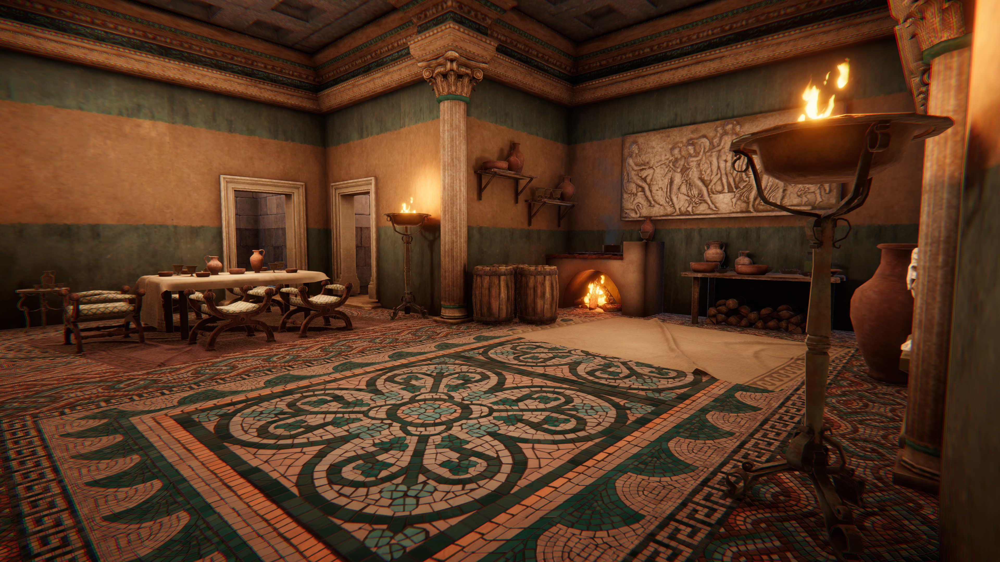

Professional AR Development
Reveal: The Past
Reveal: The Past is a mobile AR product focused on bringing heritage sites to life through interactive environments, characters and storytelling. As the sole artist on the project, the role covers environment art, set dressing, props, characters, animation, VFX, materials and interactive experience design within Unity 6.
Overview
Reveal: The Past is a mobile AR product focused on bringing heritage sites to life through interactive environments, characters and storytelling. As the sole artist on the project, the role covers environment art, set dressing, props, characters, animation, VFX, materials and interactive experience design within Unity 6. Development has included prototype experiences for Great Witcombe Roman Villa, Gloucester Cathedral, Brean Down Fort and Chedworth Roman Villa. These experiences are currently internal development prototypes and have not yet been deployed as commissioned site experiences.
Site Experiences
A selection of heritage environments developed as internal prototypes for the Reveal: The Past platform.
Overview
Environment reconstruction and interactive interpretation of a Roman villa environment. Responsibilities include environmental composition, set dressing, vegetation, and interactive elements to guide visitor discovery.
Main Cinematic



Overview
Environment presentation and interactive experience design for Gloucester Cathedral. Work included environment composition, lighting studies and optimisation for mobile AR.
Main Cinematic


Overview
Development covering both the Victorian Palmerston Fort and WWII occupation. The site experience explores historical layering and visitor interpretation.
Main Cinematic


Overview
Roman archaeological reconstruction and interactive heritage interpretation. Focus on accurate composition and visitor-centric storytelling through environment design.
Main Cinematic


Technical Breakdown
The production pipeline behind the environments, assets and real-time AR experiences.

Environment Art & Set Dressing
Environments were constructed and dressed around the architecture, history and physical context of each location. Composition, asset placement, vegetation and environmental detail were used to create believable spaces while supporting the intended visitor experience.
Asset Adaptation & Optimisation
Third-party asset packs were regularly adapted for AR rather than used unchanged. Geometry, materials, textures and shaders were reworked where necessary to meet mobile performance requirements while maintaining a consistent visual style.

Materials & Shaders
Materials were developed using Substance Painter and Unity Shader Graph, balancing surface detail and visual fidelity against the constraints of mobile AR hardware.
Characters & Animation
Historical characters were created using Character Creator 4 and animated with iClone 8 before being integrated into Unity. Character presentation and animation were designed around short interactive encounters within the wider environment.
Additional Responsibilities
Supporting production skills that complemented the environment art for Reveal.
Interactive Experience Design
Experiences are designed around how visitors move through and interact with each heritage location. Environment layout, character encounters, interactive elements and environmental storytelling are combined to create experiences that guide discovery without relying entirely on traditional exposition.
Site Research & Development
Potential heritage locations have been researched and evaluated for their suitability for AR, considering historical significance, visitor experience, technical feasibility and sustainability. This work supported internal pitches exploring how Reveal could be applied to additional heritage locations, including opportunities with Cadw.